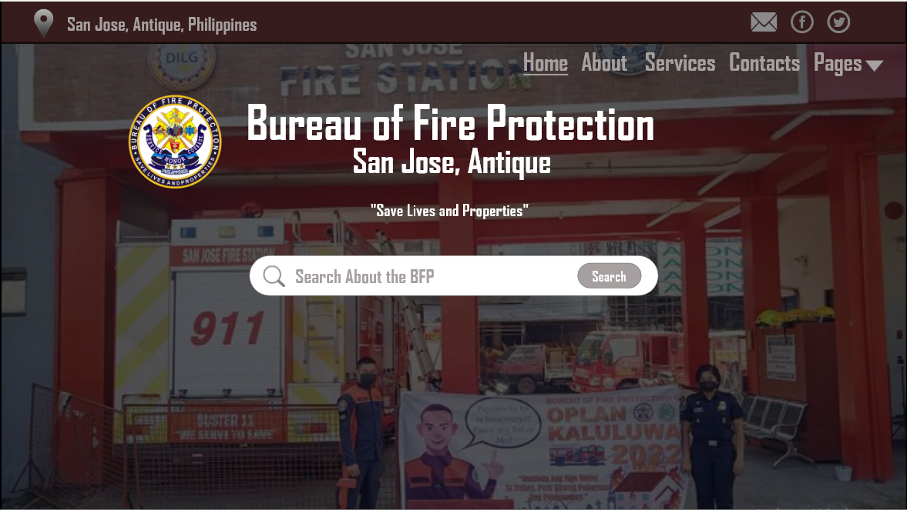
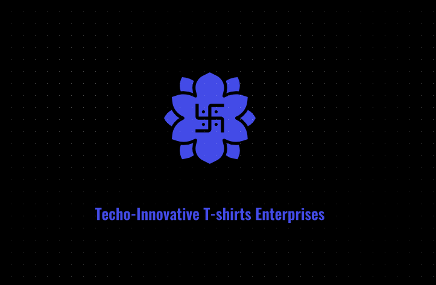

Services that I offer includes:
Webpage Creation
Creating Websites for Business, Personal use, Agencies, etc.
Webpage Creation is a service I offer that caters to the diverse needs of businesses, individuals, and agencies. In today's digital age, having a strong online presence is crucial, and I am dedicated to helping clients achieve this through custom-designed websites. Whether it's for a business seeking to expand its reach, an individual looking to showcase their portfolio, or an agency requiring a professional platform, I create websites that are not only visually appealing but also user-friendly and optimized for performance. My goal is to provide clients with a seamless online experience that effectively represents their brand and meets their specific needs.
Graphic Design
Creating Logos, Banners, T-Shirt Designs
Graphic Design is a dynamic service I offer, specializing in creating visually compelling logos, banners, and T-shirt designs. In an increasingly visual world, a strong graphic identity is essential for standing out and making a memorable impression. I focus on crafting designs that capture the essence of your brand or personal style, ensuring that each element—whether it's a logo, banner, or T-shirt graphic—resonates with your target audience. By blending creativity with strategic thinking, I deliver designs that not only look great but also effectively communicate your message and enhance your brand's visibility.